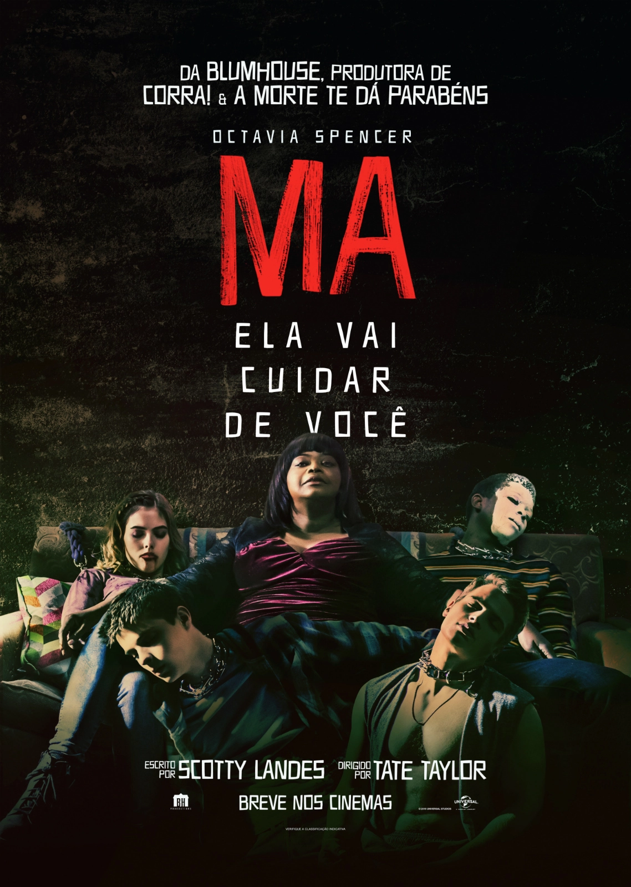

MA

30 de maio de 2019 No cinema / 1h 40min / Suspense, Terror
Direção: Tate Taylor
Roteiro Scotty Landes
Elenco: Octavia Spencer, Diana Silvers, Juliette Lewis
Sinopse
Maggie (Diana Silvers) e seus amigos, todos menores de idade, estão tentando descolar bebidas alcóolicas em um mercado quando conhecem Sue Ann (Octavia Spencer), uma mulher adulta que usa sua identidade para ajudá-los. Além de comprar as bebidas, ela decide oferecer sua casa para que eles organizem uma festa com o pessoal do colégio. Os eventos acabam se tornando uma rotina do grupo, até que os jovens começam a identificar um comportamento estranho da dona da casa, que se torna cada vez mais controladora e obsessiva.
x: A Marca da Morte

11 de agosto de 2022
Direção: Ti West
Elenco: Mia Goth, Jenna Ortega, Martin Henderson
Sinopse
Um grupo de filmmakers vão para uma casa de fazenda para gravar um filme pornográfico, mas quando os anfitriões os pegam no ato, o simples casal de idosos pode parecer muito mais assustador.
A Visita

26 de novembro de 2015
Direção: M. Night Shyamalan
Elenco: Olivia DeJonge, Ed
Oxenbould, Deanna Dunagan
Sinopse
Um garoto (Ed Oxenbould) e sua irmã (Olivia DeJonge) são mandados pela mãe (Kathryn Hahn) para visitar seus avós que moram em uma remota fazenda. Não demora muito até que os irmãos descubram que os idosos estão envolvidos com coisas profundamente pertubadoras que colocam a vida dos netos em perigo.
Boa Noite, mamãe!

10 de março de 2016 No cinema / 1h 40min / Terror, Drama, Fantasia
Direção: Veronika Franz, Severin Fiala
Roteiro Veronika Franz, Severin Fiala
Elenco: Susanne Wuest, Lukas Schwarz, Elias Schwarz
Título original Ich seh, Ich seh
Sinopse
Uma família vive em uma residência isolada em meio a árvores e plantações de milho. Após dias afastada por conta de cirurgias plásticas, a mãe (Susanne Wuest) volta para casa e não é reconhecida pelos filhos gêmeos. As crianças, de nove anos, duvidam que a mulher de rosto coberto seja realmente sua mãe e a partir de então nada será como antes.
Não! Não Olhe!

25 de agosto de 2022 No cinema / 2h 10min / Terror, Ficção científica, Suspense
Direção: Jordan Peele
Roteiro Jordan Peele
Elenco: Daniel Kaluuya, Keke Palmer, Steven Yeun
Título original Nope
Sinopse
Novo filme de terror do diretor Jordan Peele (Corra e Nós). Em Não! Não Olhe! uma cidade do interior da Califórnia começa a ter eventos bizarros e extraterrestres. Uma dupla de irmãos interpretado por Keke Palmer (True Jackson e Alice) e Daniel Kaluuya (Corra e Judas e o Messias Negro), possuem um rancho de cavalos e são vizinhos de um parque de diversões de uma série de televisão do personagem interpretado por Steven Yeun, inspirada no velho oeste. Os dois então são testemunhas de eventos bizarros e discos voadores.
Hereditário

21 de junho de 2018 No cinema / 2h 06min / Terror, Drama
Direção: Ari Aster
Roteiro Ari Aster
Elenco: Toni Collette, Gabriel Byrne, Alex Wolff
Título original Hereditary
Sinopse
Quando sua mãe - que sofria de distúrbios mentais - falece, Annie (Toni Collette), seu marido (Gabriel Byrne), filho (Alex Wolff) e filha (Milly Shapiro) lamentam sua perda. Todavia, após a morte da reclusa avó, a família Graham começa a desvendar algumas coisas. A família recorre a diferentes meios para lidar com sua dor, incluindo Annie e sua filha flertando com o sobrenatural. Mesmo após a partida da matriarca, ela permanece como se fosse um sombra sobre a família, especialmente sobre a solitária neta adolescente, Charlie, por quem ela sempre manteve uma fascinação não usual. Com um crescente terror tomando conta da casa, a família explora lugares mais obscuros para escapar do infeliz destino que herdaram. Cada um deles começa a ter experiências perturbadoras e sobrenaturais ligadas aos segredos sinistros e traumas emocionais que passaram pelas gerações de sua família.
Pânico

13 de janeiro de 2022 No cinema / 1h 55min / Terror, Suspense
Direção: Matt Bettinelli-Olpin, Tyler Gillett
Roteiro James Vanderbilt, Kevin Williamson
Elenco: Neve Campbell, Courteney Cox, David Arquette
Título original Scream
Sinopse
Pânico é a quinta parte da franquia clássica de terror iniciada nos anos 90, sendo uma sequência direta dos acontecimentos do filme de 2011, que mostrará uma mulher voltando para sua cidade natal e tentando descobrir quem está cometendo os atuais crimes cruéis, vinte e cinco anos depois que uma série de assassinatos brutais chocou a pacata cidade de Woodsboro, na Califórnia. Agora um novo assassino veste a máscara do Ghostface e começa a mirar em um grupo de adolescentes, o que será capaz de ressuscitar segredos do passado mortal da cidade, além de reacender traumas nos sobreviventes, que, novamente, precisaram enfrentar essa ameaça obscura e violenta.
Terrifier 2

29 de dezembro de 2022 No cinema / 2h 18min / Terror
Direção: Damien Leone
Roteiro Damien Leone
Elenco: David Howard Thornton, Jenna Kanell, Catherine Corcoran
Sinopse
Terrifier 2 se passa um ano depois do primeiro filme. Acordando no necrotério após seu massacre na noite de Halloween do ano passado, Art the Clown (David Howard Thornton) está de volta no tempo para o Dia da Reforma! Desta vez, ele está de olho na jovem Sienna (Lauren LaVera) e seu irmão mais novo, Jonathan (Elliott Fullam). Porque é Halloween mais uma vez e a sede de assassinato do sinistro malabarista deve ser satisfeita. A fantasia caseira de Halloween de Sienna e sua trágica história familiar têm uma conexão misteriosa com os assassinatos que o homem de pesadelo com a fantasia de palhaço cometerá novamente naquela noite.
Órfã 2: A origem

15 de setembro de 2022 No cinema / 1h 39min / Terror, Suspense
Direção: William Brent Bell
Roteiro Alex Mace, David Coggeshall
Elenco: Isabelle Fuhrman, Julia Stiles, Rossif Sutherland
Título original Orphan: First Kill
Sinopse
Em Órfã 2: A Origem, Leena Klammer/Esther Albright (Isabelle Fuhrman) está de volta para nos mostrar sua mente perversa e instável. Nesta prequela ao filme original de 2009, depois de orquestrar uma brilhante fuga de uma clínica psiquiátrica da Estônia, Esther viaja para os Estados Unidos se passando pela filha desaparecida de uma família rica que procura uma menina por quatro anos. Após ser acolhida pela nova família, luxo e uma psicóloga, "Esther" começa a mostrar suas reais intenções com o pai e a mãe "biológicos". Esther começa a ser vigiada por um detetive, que fará tudo para mostrar à família que a menina não diz ser quem é de verdade, colocando em risco a nova identidade da órfã. No entanto, surge uma reviravolta inesperada que a coloca contra uma mãe que protegerá sua família da 'criança' assassina a qualquer custo, mesmo que signifique sua própria morte e a de todos.